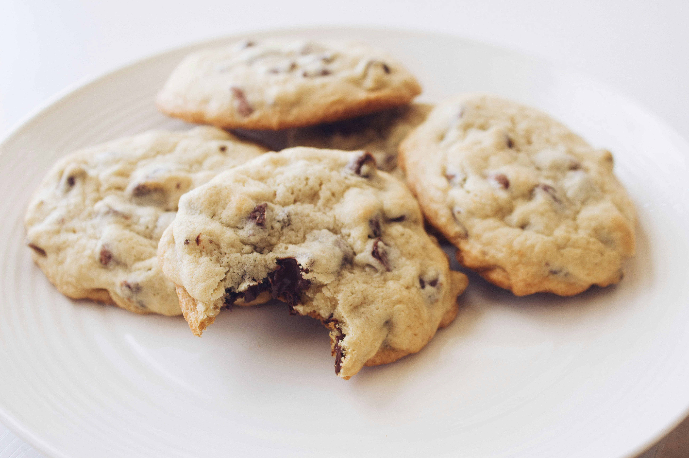

Chocolate Chip Cookies
Recipe From Chef Tamara

Ingredients:
| 1 cup |
butter or margerine |
| 1 cup |
granulated sugar |
| 1 cup |
brown sugar |
| 2 |
large eggs |
| 1 tsp |
vanilla |
| 2 cups |
flour |
| 1/2 tsp |
salt |
| 1 tsp |
baking powder |
| 1 tsp |
baking soda |
| 1 cup |
quick oats |
| 1 cup |
chocolate chips |
Instructions:
- Cream butter & both sugars together with mixer
- Add eggs & vanilla
- Mix in flower, salt, baking powder & baking soda
- Add in the oats
- Mix in chocolate chips (on low)
- Preheat oven to 325 degrees
- Put cookies on tray and bake for approx. 10-12 minutes
Tips:
- For chewier cookies, slightly underbake them and let them rest on the baking sheet for a few extra minutes after removing them from the oven.
- You can add chopped pecans or walnuts for extra texture if needed.
- Store cookies in an airtight container to maintain freshness.